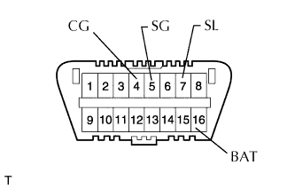
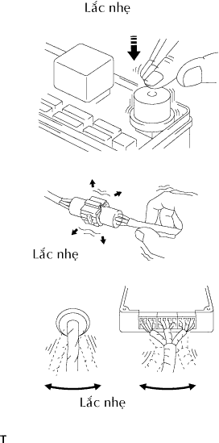
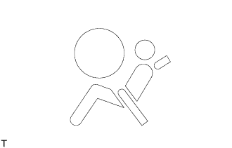

HỆ THỐNG TÚI KHÍ > HỆ THỐNG CHẨN ĐOÁN |
| MÔ TẢ |
Cảm biến túi khí trung tâm điều khiển các chức năng của Hệ thống hỗ trợ giảm va đập (SRS) trên xe. Dữ liệu của SRS có thể đọc từ giắc DLC3 của xe. Khi hệ thống có vẻ như bị hư hỏng, dùng máy chẩn đoán để kiểm tra hư hỏng và sửa chữa.
| KIỂM TRA DLC3 |
 |
ECM của xe dùng chuyển liên lạc ISO 14230 (M-ODB). Bố trí cực của DLC3 phù hợp với chuẩn ISO 15031-03 phù hợp với định dạng ISO 14230.
| Ký hiệu (Số cực) | Mô tả cực | Nối | Điều kiện tiêu chuẩn |
| SIL (7) - SG (5) | Đường truyền “+” | Trong khi truyền | Tạo xung |
| CG (4) - Mát thân xe | Mát thân xe | Luôn luôn | Dưới 1 Ω |
| SG (5) - Mát thân xe | Tiếp mát tín hiệu | Luôn luôn | Dưới 1 Ω |
| BAT (16) - Mát thân xe | Dương ắc quy | Luôn luôn | Dưới 1 Ω |
| MÔ PHỎNG TRIỆU CHỨNG |
Phương pháp rung động: Khi rung động có vẻ như là nguyên nhân chính.
|  |
Tạo rung động nhẹ bằng ngón tay vào chi tiết của cảm biến mà có thể là nguyên nhân của hư hỏng và kiểm tra xem hư hỏng có xảy ra hay không.
Lắc nhẹ các giắc nối theo chiều thẳng đứng và ngang.
Lắc nhẹ dây điện theo hướng thẳng đứng và ngang.
| CHỨC NĂNG CỦA ĐÈN BÁO SRS |
Kiểm tra sơ bộ
Tắt khóa điện OFF. Đợi ít nhất 2 giây và sau đó bật khóa điện ON. Đèn báo SRS sáng lên trong khoảng 6 giây và việc chẩn đoán SRS được thực hiện.
Kiểm tra thường xuyên
Sau khi kiểm tra sơ bộ, cảm biến túi khí trung tâm thường xuyên theo dõi SRS xem có hư hỏng không.
Xem lại
Khi SRS là bình thường:
Đèn báo SRS sáng chỉ trong thời gian kiểm tra sơ bộ (khoảng 6 giây sau khi khóa điện bật ON).
Khi SRS bị trục trặc, một trong những triệu chứng sau có thế xuất hiện:
| KIỂM TRA ĐÈN BÁO SRS |
|  |
Bật khóa điện ON và kiểm tra rằng đèn báo SRS sáng trong khoảng 6 giây (kiểm tra sơ bộ).
Kiểm tra rằng đèn báo SRS tắt đi khoảng 6 giây sau khi khóa điện bật ON (kiểm tra thường xuyên).
| PHƯƠNG PHÁP NHẢ CƠ CẤU CHỐNG KÍCH HOẠT |
Cơ cấu chống kích hoạt được lắp trong giắc nối cho mạch ngòi nổ của SRS. Như đã mô tả trong chương chẩn đoán, cắm một miếng giấy có chiều dày bằng với chiều dày của cực đực vào giữa cực và lò xo nối tắt để nhả cơ cấu (hãy tham khảo hình vẽ dưới đây).